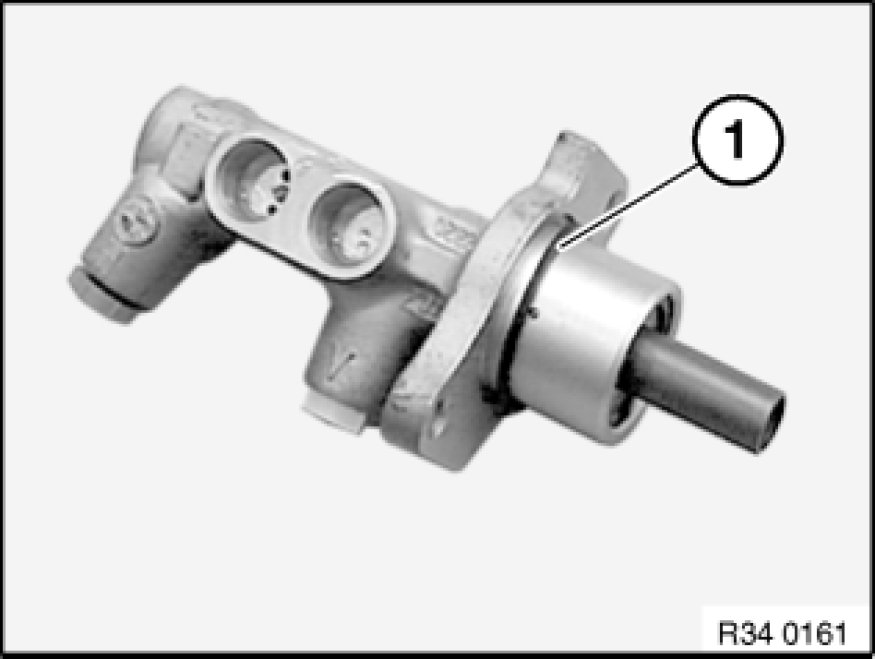

Removing and Installing/Replacing Master Brake Cylinder for DSC
34 31 505 - Removing and installing/replacing master brake cylinder for DSC

Necessary preliminary tasks:
- Read and comply with General Information Service and Repair.
- Remove expansion tank Removing and Installing/Replacing Expansion Tank for Hydraulic Brake Actuation.
Unfasten brake lines (1).
Installation:
Note changed tightening torque.
Tightening torque 34 32 6AZ 34 32 Brake Lines.
Release nuts (2) and pull brake master cylinder (3) in direction of arrow straight out of brake booster.
Installation:
Replace self-locking nuts.
Tightening torque 34 31 1AZ 34 31 Brake Master Cylinder.

Installation:
Replace O-ring (1).
Installation:
When inserting brake master cylinder (2) into brake booster (1), make sure that pressure rod of brake booster (1) and pressure rod of brake master cylinder (2) lie on a single plane.
After installation:
- Bleed braking system Bleeding Brake System with DSC